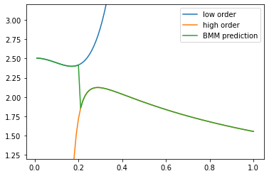
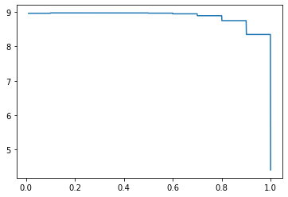
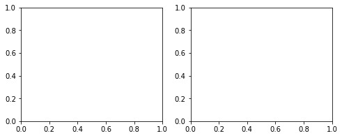
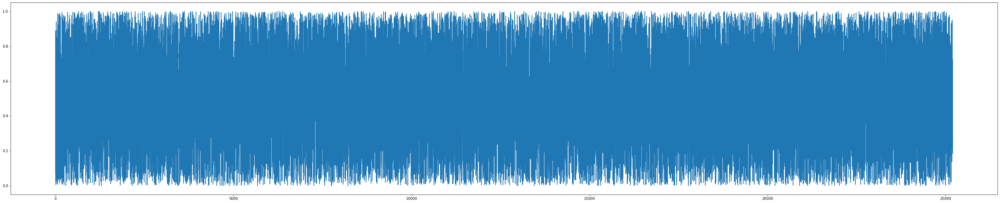
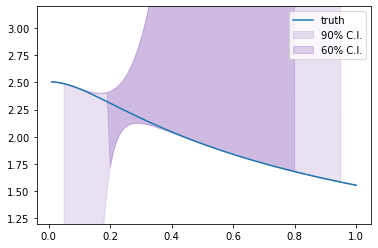

Linear BMM with SAMBA toy models¶
This notebook shows how to use the Bayesian model mixing package Taweret for a toy problem.
Author : Dan Liyanage
Date : 19/21/2022
Steps for linear BMM¶
1. Get Models with a prediction method
2. Choose a Mixing method
3. Estimate the mixture weights (parameters in the mixture function) with user defined calibration method
To execute each step in this notebook we need to import the following from Taweret.
[33]:
import sys
import os
sys.path.insert(0, os.path.abspath('../../../../Taweret'))
[34]:
# Import models with a predict method
from Taweret.models import samba_models as toy_models
# Mixing object with a likelihood method
from Taweret.mix.linear import linear_mix as LM
# Wrapper for the likelihood to be used with Bilby
from Taweret.calibrate.likelihood_wrappers import likelihood_wrapper_for_bilby
[35]:
# For plotting
import matplotlib.pyplot as plt
import seaborn as sns
# For calibration
import bilby
# For other operations
import numpy as np
import os
import shutil
[36]:
m1 = toy_models.loworder(5, 'uninformative')
m2 = toy_models.highorder(5, 'uninformative')
truth = toy_models.true_model()
[37]:
g = np.linspace(0.1,1,10)
plot_g = np.linspace(0.01,1,100)
m1_prediction = m1.predict(plot_g)
m2_prediction = m2.predict(plot_g)
true_output = truth.predict(plot_g)
exp_data = truth.predict(g)
1. The models and the experimental data.¶
[38]:
fig, ax_f = plt.subplots()
ax_f.plot(plot_g, m1_prediction[0].flatten(), label='low order')
ax_f.plot(plot_g, m2_prediction[0].flatten(), label='high order')
ax_f.plot(plot_g, true_output[0], label='truth')
ax_f.scatter(g,exp_data[0], marker='x', label='experimental data')
ax_f.set_ylim(1.2,3.2)
ax_f.legend()
[38]:
<matplotlib.legend.Legend at 0x7f97cf60a208>

2. Choose a Mixing method¶
[39]:
mix_model = LM(m1, m2, g, exp_data[0], exp_data[1], method='step')
[40]:
mix_model.plot_weights(np.array([0.2]),plot_g)

[41]:
#mix_model.mix_loglikelihood_test([0.25])
[42]:
mix_model.mix_loglikelihood(np.array([0.2]))
[42]:
8.97310127442708
[43]:
fig, ax = plt.subplots()
mix_prediction = mix_model.prediction(np.array([0.2]),plot_g)
ax.plot(plot_g, m1_prediction[0].flatten(), label='low order')
ax.plot(plot_g, m2_prediction[0].flatten(), label='high order')
ax.plot(plot_g, mix_prediction.flatten(), label='BMM prediction')
ax.set_ylim(1.2,3.2)
ax.legend()
[43]:
<matplotlib.legend.Legend at 0x7f97d0b71160>

[44]:
sw = np.linspace(0.01,1,1000)
likelihood = np.array([mix_model.mix_loglikelihood(np.array([s])) for s in sw]).flatten()
fig, ax = plt.subplots()
ax.plot(sw,likelihood,label='Mixture likelihood for step function')
[44]:
[<matplotlib.lines.Line2D at 0x7f97cf7c2d30>]

3. Estimating the mixture weights¶
[45]:
likelihood = likelihood_wrapper_for_bilby(mix_model)
[46]:
# A few simple setup steps
label = "step_mixing"
outdir = "outdir"
priors = dict(
theta_0=bilby.core.prior.Uniform(0, 1, "theta_0")
)
# priors = dict(
# theta_0=bilby.core.prior.Beta(2,2)
# )
# And run sampler
## If file exists, delete it ##
if os.path.exists(outdir):
shutil.rmtree(outdir)
result = bilby.run_sampler(
likelihood,
priors,
sampler="ptemcee",
ntemps=5,
nwalkers=100,
Tmax=10,
nburn=200,
nsamples=500, # This is the number of raw samples
threads=5,
)
result.plot_corner()
21:44 bilby INFO : Running for label 'label', output will be saved to 'outdir'
21:44 bilby INFO : Search parameters:
21:44 bilby INFO : theta_0 = Uniform(minimum=0, maximum=1, name='theta_0', latex_label='theta_0', unit=None, boundary=None)
21:44 bilby INFO : Single likelihood evaluation took 1.108e-04 s
21:44 bilby WARNING : Supplied argument 'npool' not an argument of 'Ptemcee', removing.
21:44 bilby WARNING : Supplied argument 'nburn' not an argument of 'Ptemcee', removing.
21:44 bilby INFO : Using sampler Ptemcee with kwargs {'ntemps': 5, 'nwalkers': 100, 'Tmax': 10, 'betas': None, 'a': 2.0, 'adaptation_lag': 10000, 'adaptation_time': 100, 'random': None, 'adapt': False, 'swap_ratios': False}
21:44 bilby INFO : Using convergence inputs: ConvergenceInputs(autocorr_c=5, autocorr_tol=50, autocorr_tau=1, gradient_tau=0.1, gradient_mean_log_posterior=0.1, Q_tol=1.02, safety=1, burn_in_nact=50, burn_in_fixed_discard=0, mean_logl_frac=0.01, thin_by_nact=0.5, nsamples=500, ignore_keys_for_tau=None, min_tau=1, niterations_per_check=5)
21:44 bilby INFO : Creating MultiPool with 5 processes
21:44 bilby INFO : Generating pos0 samples
21:44 bilby INFO : Starting to sample
1|0:00:00|nc:2.5e+03|a0:0.20-1.00|swp:0.98-1.00|n:nan<500|t!nan(+nan,+nan)|q:inf|0.06ms/ev
2|0:00:00|nc:5.0e+03|a0:0.30-1.00|swp:0.97-1.00|n:nan<500|t!nan(+nan,+nan)|q:inf|0.06ms/ev
3|0:00:00|nc:7.5e+03|a0:0.40-1.00|swp:0.97-1.00|n:nan<500|t!nan(+nan,+nan)|q:inf|0.06ms/ev
4|0:00:00|nc:1.0e+04|a0:0.45-0.95|swp:0.97-1.00|n:nan<500|t!nan(+nan,+nan)|q:inf|0.06ms/ev
5|0:00:00|nc:1.2e+04|a0:0.48-0.92|swp:0.97-1.00|n:nan<500|t!nan(+nan,+nan)|q:inf|0.06ms/ev
6|0:00:00|nc:1.5e+04|a0:0.43-0.93|swp:0.97-1.00|n:nan<500|t!nan(+nan,+nan)|q:inf|0.06ms/ev
7|0:00:01|nc:1.8e+04|a0:0.43-0.91|swp:0.97-1.00|n:nan<500|t!nan(+nan,+nan)|q:inf|0.06ms/ev
8|0:00:01|nc:2.0e+04|a0:0.45-0.93|swp:0.97-0.99|n:nan<500|t!nan(+nan,+nan)|q:inf|0.07ms/ev
9|0:00:01|nc:2.2e+04|a0:0.49-0.91|swp:0.97-0.99|n:nan<500|t!nan(+nan,+nan)|q:inf|0.07ms/ev
10|0:00:01|nc:2.5e+04|a0:0.52-0.88|swp:0.97-0.99|n:nan<500|t!nan(+nan,+nan)|q:inf|0.06ms/ev
11|0:00:01|nc:2.8e+04|a0:0.55-0.87|swp:0.97-0.99|n:nan<500|t!nan(+nan,+nan)|q:inf|0.05ms/ev
12|0:00:01|nc:3.0e+04|a0:0.58-0.85|swp:0.97-0.99|n:nan<500|t!nan(+nan,+nan)|q:inf|0.05ms/ev
13|0:00:01|nc:3.2e+04|a0:0.60-0.85|swp:0.97-0.99|n:nan<500|t!nan(+nan,+nan)|q:inf|0.05ms/ev
14|0:00:01|nc:3.5e+04|a0:0.59-0.84|swp:0.97-0.99|n:nan<500|t!nan(+nan,+nan)|q:inf|0.05ms/ev
15|0:00:02|nc:3.8e+04|a0:0.60-0.85|swp:0.97-0.99|n:nan<500|t!nan(+nan,+nan)|q:inf|0.04ms/ev
16|0:00:02|nc:4.0e+04|a0:0.60-0.85|swp:0.97-0.99|n:nan<500|t!nan(+nan,+nan)|q:inf|0.05ms/ev
17|0:00:02|nc:4.2e+04|a0:0.61-0.86|swp:0.97-0.99|n:nan<500|t!nan(+nan,+nan)|q:inf|0.05ms/ev
18|0:00:02|nc:4.5e+04|a0:0.61-0.86|swp:0.97-1.00|n:nan<500|t!nan(+nan,+nan)|q:inf|0.05ms/ev
19|0:00:02|nc:4.8e+04|a0:0.63-0.86|swp:0.97-0.99|n:nan<500|t!nan(+nan,+nan)|q:inf|0.05ms/ev
20|0:00:02|nc:5.0e+04|a0:0.65-0.85|swp:0.97-0.99|n:nan<500|t!nan(+nan,+nan)|q:inf|0.05ms/ev
21|0:00:02|nc:5.2e+04|a0:0.66-0.85|swp:0.97-0.99|n:nan<500|t!nan(+nan,+nan)|q:inf|0.04ms/ev
22|0:00:02|nc:5.5e+04|a0:0.65-0.84|swp:0.97-0.99|n:nan<500|t!nan(+nan,+nan)|q:inf|0.04ms/ev
23|0:00:03|nc:5.8e+04|a0:0.65-0.83|swp:0.97-0.99|n:nan<500|t!nan(+nan,+nan)|q:inf|0.05ms/ev
24|0:00:03|nc:6.0e+04|a0:0.64-0.83|swp:0.97-0.99|n:nan<500|t!nan(+nan,+nan)|q:inf|0.05ms/ev
25|0:00:03|nc:6.2e+04|a0:0.66-0.84|swp:0.97-0.99|n:nan<500|t!nan(+nan,+nan)|q:inf|0.05ms/ev
26|0:00:03|nc:6.5e+04|a0:0.66-0.85|swp:0.97-0.99|n:nan<500|t!nan(+nan,+nan)|q:inf|0.05ms/ev
27|0:00:03|nc:6.8e+04|a0:0.67-0.84|swp:0.97-0.99|n:nan<500|t!nan(+nan,+nan)|q:inf|0.05ms/ev
28|0:00:03|nc:7.0e+04|a0:0.67-0.85|swp:0.97-0.99|n:nan<500|t!nan(+nan,+nan)|q:inf|0.05ms/ev
29|0:00:03|nc:7.2e+04|a0:0.68-0.84|swp:0.97-0.99|n:nan<500|t!nan(+nan,+nan)|q:inf|0.04ms/ev
30|0:00:03|nc:7.5e+04|a0:0.67-0.85|swp:0.97-0.99|n:nan<500|t!nan(+nan,+nan)|q:inf|0.04ms/ev
31|0:00:03|nc:7.8e+04|a0:0.67-0.84|swp:0.97-0.99|n:nan<500|t!nan(+nan,+nan)|q:inf|0.04ms/ev
32|0:00:04|nc:8.0e+04|a0:0.66-0.82|swp:0.97-0.99|n:nan<500|t!nan(+nan,+nan)|q:inf|0.04ms/ev
33|0:00:04|nc:8.2e+04|a0:0.67-0.82|swp:0.97-0.99|n:nan<500|t!nan(+nan,+nan)|q:inf|0.05ms/ev
34|0:00:04|nc:8.5e+04|a0:0.66-0.82|swp:0.97-0.99|n:nan<500|t!nan(+nan,+nan)|q:inf|0.05ms/ev
35|0:00:04|nc:8.8e+04|a0:0.66-0.83|swp:0.97-0.99|n:nan<500|t!nan(+nan,+nan)|q:inf|0.05ms/ev
36|0:00:04|nc:9.0e+04|a0:0.66-0.83|swp:0.97-0.99|n:nan<500|t!nan(+nan,+nan)|q:inf|0.05ms/ev
37|0:00:04|nc:9.2e+04|a0:0.66-0.83|swp:0.97-0.99|n:nan<500|t!nan(+nan,+nan)|q:inf|0.05ms/ev
38|0:00:04|nc:9.5e+04|a0:0.67-0.83|swp:0.97-0.99|n:nan<500|t!nan(+nan,+nan)|q:inf|0.05ms/ev
39|0:00:04|nc:9.8e+04|a0:0.68-0.83|swp:0.97-0.99|n:nan<500|t!nan(+nan,+nan)|q:inf|0.04ms/ev
40|0:00:04|nc:1.0e+05|a0:0.67-0.82|swp:0.97-0.99|n:nan<500|t!nan(+nan,+nan)|q:inf|0.04ms/ev
41|0:00:05|nc:1.0e+05|a0:0.66-0.83|swp:0.97-0.99|n:nan<500|t!nan(+nan,+nan)|q:inf|0.04ms/ev
42|0:00:05|nc:1.0e+05|a0:0.65-0.83|swp:0.97-0.99|n:nan<500|t!nan(+nan,+nan)|q:inf|0.04ms/ev
43|0:00:05|nc:1.1e+05|a0:0.66-0.83|swp:0.97-0.99|n:nan<500|t!nan(+nan,+nan)|q:inf|0.04ms/ev
44|0:00:05|nc:1.1e+05|a0:0.65-0.83|swp:0.97-0.99|n:nan<500|t!nan(+nan,+nan)|q:inf|0.04ms/ev
45|0:00:05|nc:1.1e+05|a0:0.65-0.83|swp:0.97-0.99|n:nan<500|t!nan(+nan,+nan)|q:inf|0.04ms/ev
46|0:00:05|nc:1.2e+05|a0:0.66-0.83|swp:0.97-0.99|n:nan<500|t!nan(+nan,+nan)|q:inf|0.04ms/ev
47|0:00:05|nc:1.2e+05|a0:0.66-0.83|swp:0.97-0.99|n:nan<500|t!nan(+nan,+nan)|q:inf|0.04ms/ev
48|0:00:05|nc:1.2e+05|a0:0.66-0.82|swp:0.97-0.99|n:nan<500|t!nan(+nan,+nan)|q:inf|0.05ms/ev
49|0:00:05|nc:1.2e+05|a0:0.66-0.81|swp:0.97-0.99|n:nan<500|t!nan(+nan,+nan)|q:inf|0.05ms/ev
50|0:00:06|nc:1.2e+05|a0:0.66-0.81|swp:0.97-0.99|n:nan<500|t!nan(+nan,+nan)|q:inf|0.05ms/ev
51|0:00:06|nc:1.3e+05|a0:0.66-0.80|swp:0.97-0.99|n:nan<500|t!nan(+nan,+nan)|q:inf|0.05ms/ev
52|0:00:06|nc:1.3e+05|a0:0.67-0.80|swp:0.97-0.99|n:nan<500|t!nan(+nan,+nan)|q:inf|0.05ms/ev
53|0:00:06|nc:1.3e+05|a0:0.67-0.80|swp:0.97-0.99|n:nan<500|t!nan(+nan,+nan)|q:inf|0.05ms/ev
54|0:00:06|nc:1.4e+05|a0:0.67-0.80|swp:0.97-0.99|n:nan<500|t!nan(+nan,+nan)|q:inf|0.05ms/ev
55|0:00:06|nc:1.4e+05|a0:0.67-0.80|swp:0.97-0.99|n:nan<500|t!nan(+nan,+nan)|q:inf|0.05ms/ev
56|0:00:06|nc:1.4e+05|a0:0.67-0.80|swp:0.97-0.99|n:nan<500|t!nan(+nan,+nan)|q:inf|0.05ms/ev
57|0:00:06|nc:1.4e+05|a0:0.67-0.80|swp:0.97-0.99|n:nan<500|t!nan(+nan,+nan)|q:inf|0.05ms/ev
58|0:00:07|nc:1.4e+05|a0:0.67-0.80|swp:0.97-0.99|n:nan<500|t!nan(+nan,+nan)|q:inf|0.05ms/ev
59|0:00:07|nc:1.5e+05|a0:0.67-0.80|swp:0.97-0.99|n:nan<500|t!nan(+nan,+nan)|q:inf|0.05ms/ev
60|0:00:07|nc:1.5e+05|a0:0.68-0.79|swp:0.97-0.99|n:nan<500|t!nan(+nan,+nan)|q:inf|0.05ms/ev
61|0:00:07|nc:1.5e+05|a0:0.68-0.79|swp:0.97-0.99|n:nan<500|t!nan(+nan,+nan)|q:inf|0.05ms/ev
62|0:00:07|nc:1.6e+05|a0:0.68-0.79|swp:0.97-0.99|n:nan<500|t!nan(+nan,+nan)|q:inf|0.05ms/ev
63|0:00:07|nc:1.6e+05|a0:0.68-0.80|swp:0.97-0.99|n:nan<500|t!nan(+nan,+nan)|q:inf|0.05ms/ev
64|0:00:07|nc:1.6e+05|a0:0.68-0.80|swp:0.97-0.99|n:nan<500|t!nan(+nan,+nan)|q:inf|0.05ms/ev
65|0:00:08|nc:1.6e+05|a0:0.68-0.79|swp:0.97-0.99|n:nan<500|t!nan(+nan,+nan)|q:inf|0.05ms/ev
66|0:00:08|nc:1.6e+05|a0:0.68-0.79|swp:0.97-0.99|n:nan<500|t!nan(+nan,+nan)|q:inf|0.06ms/ev
67|0:00:08|nc:1.7e+05|a0:0.68-0.79|swp:0.97-0.99|n:nan<500|t!nan(+nan,+nan)|q:inf|0.06ms/ev
68|0:00:08|nc:1.7e+05|a0:0.69-0.79|swp:0.97-0.99|n:nan<500|t!nan(+nan,+nan)|q:inf|0.05ms/ev
69|0:00:08|nc:1.7e+05|a0:0.68-0.79|swp:0.97-0.99|n:nan<500|t!nan(+nan,+nan)|q:inf|0.05ms/ev
70|0:00:08|nc:1.8e+05|a0:0.69-0.79|swp:0.97-0.99|n:nan<500|t!nan(+nan,+nan)|q:inf|0.05ms/ev
71|0:00:08|nc:1.8e+05|a0:0.69-0.79|swp:0.97-0.99|n:nan<500|t!nan(+nan,+nan)|q:inf|0.05ms/ev
72|0:00:08|nc:1.8e+05|a0:0.69-0.80|swp:0.97-0.99|n:nan<500|t!nan(+nan,+nan)|q:inf|0.05ms/ev
73|0:00:09|nc:1.8e+05|a0:0.69-0.79|swp:0.97-0.99|n:nan<500|t!nan(+nan,+nan)|q:inf|0.05ms/ev
74|0:00:09|nc:1.8e+05|a0:0.69-0.79|swp:0.97-0.99|n:nan<500|t!nan(+nan,+nan)|q:inf|0.05ms/ev
75|0:00:09|nc:1.9e+05|a0:0.69-0.80|swp:0.97-0.99|n:nan<500|t!nan(+nan,+nan)|q:inf|0.05ms/ev
76|0:00:09|nc:1.9e+05|a0:0.69-0.79|swp:0.97-0.99|n:nan<500|t!nan(+nan,+nan)|q:inf|0.05ms/ev
77|0:00:09|nc:1.9e+05|a0:0.69-0.79|swp:0.97-0.99|n:nan<500|t!nan(+nan,+nan)|q:inf|0.05ms/ev
78|0:00:09|nc:2.0e+05|a0:0.69-0.80|swp:0.97-0.99|n:nan<500|t!nan(+nan,+nan)|q:inf|0.05ms/ev
79|0:00:09|nc:2.0e+05|a0:0.69-0.79|swp:0.97-0.99|n:nan<500|t!nan(+nan,+nan)|q:inf|0.06ms/ev
80|0:00:10|nc:2.0e+05|a0:0.69-0.80|swp:0.97-0.99|n:nan<500|t!nan(+nan,+nan)|q:inf|0.05ms/ev
81|0:00:10|nc:2.0e+05|a0:0.69-0.80|swp:0.97-0.99|n:nan<500|t!nan(+nan,+nan)|q:inf|0.05ms/ev
82|0:00:10|nc:2.0e+05|a0:0.69-0.80|swp:0.97-0.99|n:nan<500|t!nan(+nan,+nan)|q:inf|0.05ms/ev
83|0:00:10|nc:2.1e+05|a0:0.69-0.80|swp:0.97-0.99|n:nan<500|t!nan(+nan,+nan)|q:inf|0.05ms/ev
84|0:00:10|nc:2.1e+05|a0:0.69-0.80|swp:0.97-0.99|n:nan<500|t!nan(+nan,+nan)|q:inf|0.05ms/ev
85|0:00:10|nc:2.1e+05|a0:0.69-0.79|swp:0.97-0.99|n:nan<500|t!nan(+nan,+nan)|q:inf|0.05ms/ev
86|0:00:10|nc:2.2e+05|a0:0.69-0.80|swp:0.97-0.99|n:nan<500|t!nan(+nan,+nan)|q:inf|0.05ms/ev
87|0:00:10|nc:2.2e+05|a0:0.69-0.80|swp:0.97-0.99|n:nan<500|t!nan(+nan,+nan)|q:inf|0.05ms/ev
88|0:00:11|nc:2.2e+05|a0:0.69-0.80|swp:0.97-0.99|n:nan<500|t!nan(+nan,+nan)|q:inf|0.05ms/ev
89|0:00:11|nc:2.2e+05|a0:0.69-0.80|swp:0.97-0.99|n:nan<500|t!nan(+nan,+nan)|q:inf|0.05ms/ev
90|0:00:11|nc:2.2e+05|a0:0.69-0.80|swp:0.97-0.99|n:nan<500|t!nan(+nan,+nan)|q:inf|0.05ms/ev
91|0:00:11|nc:2.3e+05|a0:0.69-0.80|swp:0.97-0.99|n:nan<500|t!nan(+nan,+nan)|q:inf|0.05ms/ev
92|0:00:11|nc:2.3e+05|a0:0.69-0.80|swp:0.97-0.99|n:nan<500|t!nan(+nan,+nan)|q:inf|0.06ms/ev
93|0:00:11|nc:2.3e+05|a0:0.69-0.80|swp:0.97-0.99|n:nan<500|t!nan(+nan,+nan)|q:inf|0.05ms/ev
94|0:00:11|nc:2.4e+05|a0:0.69-0.80|swp:0.97-0.99|n:nan<500|t!nan(+nan,+nan)|q:inf|0.05ms/ev
95|0:00:11|nc:2.4e+05|a0:0.70-0.80|swp:0.97-0.99|n:nan<500|t!nan(+nan,+nan)|q:inf|0.05ms/ev
96|0:00:12|nc:2.4e+05|a0:0.70-0.79|swp:0.97-0.99|n:nan<500|t!nan(+nan,+nan)|q:inf|0.05ms/ev
97|0:00:12|nc:2.4e+05|a0:0.70-0.79|swp:0.97-0.99|n:nan<500|t!nan(+nan,+nan)|q:inf|0.05ms/ev
98|0:00:12|nc:2.4e+05|a0:0.70-0.79|swp:0.97-0.99|n:nan<500|t!nan(+nan,+nan)|q:inf|0.05ms/ev
99|0:00:12|nc:2.5e+05|a0:0.70-0.79|swp:0.97-0.99|n:nan<500|t!nan(+nan,+nan)|q:inf|0.05ms/ev
100|0:00:12|nc:2.5e+05|a0:0.70-0.79|swp:0.97-0.99|n:nan<500|t!nan(+nan,+nan)|q:inf|0.05ms/ev
101|0:00:12|nc:2.5e+05|a0:0.70-0.79|swp:0.97-0.99|n:5100<500|t!1(+nan,+nan)|q:1.00|0.05ms/ev
102|0:00:12|nc:2.6e+05|a0:0.70-0.79|swp:0.97-0.99|n:5200<500|t!1(+nan,+0.00)|q:1.00|0.05ms/ev
103|0:00:13|nc:2.6e+05|a0:0.70-0.78|swp:0.97-0.99|n:5300<500|t!1(+nan,+0.00)|q:1.00|0.05ms/ev
104|0:00:13|nc:2.6e+05|a0:0.70-0.78|swp:0.97-0.99|n:5400<500|t!1(+nan,+0.00)|q:1.00|0.06ms/ev
105|0:00:13|nc:2.6e+05|a0:0.70-0.79|swp:0.97-0.99|n:5500<500|t!1(+nan,+0.00)|q:1.00|0.06ms/ev
106|0:00:13|nc:2.6e+05|a0:0.70-0.79|swp:0.97-0.99|n:5600<500|t!1(+nan,+0.00)|q:1.00|0.06ms/ev
107|0:00:13|nc:2.7e+05|a0:0.70-0.79|swp:0.97-0.99|n:5700<500|t!1(+nan,+0.00)|q:1.00|0.06ms/ev
108|0:00:13|nc:2.7e+05|a0:0.70-0.79|swp:0.97-0.99|n:5800<500|t!1(+nan,+0.00)|q:1.00|0.06ms/ev
109|0:00:13|nc:2.7e+05|a0:0.70-0.78|swp:0.97-0.99|n:5900<500|t!1(+nan,+0.00)|q:1.00|0.06ms/ev
110|0:00:14|nc:2.8e+05|a0:0.70-0.78|swp:0.97-0.99|n:6000<500|t!1(+nan,+0.00)|q:1.00|0.06ms/ev
111|0:00:14|nc:2.8e+05|a0:0.70-0.78|swp:0.97-0.99|n:6100<500|t!1(+nan,+0.00)|q:1.00|0.06ms/ev
112|0:00:14|nc:2.8e+05|a0:0.70-0.78|swp:0.97-0.99|n:6200<500|t!1(+nan,+0.00)|q:1.00|0.06ms/ev
113|0:00:14|nc:2.8e+05|a0:0.70-0.78|swp:0.97-0.99|n:6300<500|t!1(+nan,+0.00)|q:1.00|0.06ms/ev
114|0:00:14|nc:2.8e+05|a0:0.70-0.78|swp:0.97-0.99|n:6400<500|t!1(+nan,+0.00)|q:1.00|0.06ms/ev
115|0:00:14|nc:2.9e+05|a0:0.70-0.78|swp:0.97-0.99|n:6500<500|t!1(+nan,+0.00)|q:1.00|0.06ms/ev
116|0:00:15|nc:2.9e+05|a0:0.70-0.78|swp:0.97-0.99|n:6600<500|t!1(+nan,+0.00)|q:1.00|0.06ms/ev
117|0:00:15|nc:2.9e+05|a0:0.70-0.78|swp:0.97-0.99|n:6700<500|t!1(+nan,+0.00)|q:1.00|0.06ms/ev
118|0:00:15|nc:3.0e+05|a0:0.70-0.78|swp:0.97-0.99|n:6800<500|t!1(+nan,+0.00)|q:1.00|0.06ms/ev
119|0:00:15|nc:3.0e+05|a0:0.70-0.78|swp:0.97-0.99|n:6900<500|t!1(+nan,+0.00)|q:1.00|0.06ms/ev
120|0:00:15|nc:3.0e+05|a0:0.70-0.78|swp:0.97-0.99|n:7000<500|t!1(+nan,+0.00)|q:1.00|0.06ms/ev
121|0:00:15|nc:3.0e+05|a0:0.70-0.78|swp:0.97-0.99|n:7100<500|t!1(+nan,+0.00)|q:1.00|0.06ms/ev
122|0:00:15|nc:3.0e+05|a0:0.70-0.78|swp:0.97-0.99|n:7200<500|t!1(+nan,+0.00)|q:1.00|0.06ms/ev
123|0:00:16|nc:3.1e+05|a0:0.70-0.79|swp:0.97-0.99|n:7300<500|t!1(+nan,+0.00)|q:1.00|0.06ms/ev
124|0:00:16|nc:3.1e+05|a0:0.70-0.78|swp:0.97-0.99|n:7400<500|t!1(+nan,+0.00)|q:1.00|0.06ms/ev
125|0:00:16|nc:3.1e+05|a0:0.71-0.78|swp:0.97-0.99|n:7500<500|t!1(+nan,+0.00)|q:1.00|0.06ms/ev
126|0:00:16|nc:3.2e+05|a0:0.71-0.78|swp:0.97-0.99|n:7600<500|t!1(+nan,+0.00)|q:1.00|0.06ms/ev
127|0:00:16|nc:3.2e+05|a0:0.71-0.79|swp:0.97-0.99|n:7700<500|t!1(+nan,+0.00)|q:1.00|0.06ms/ev
128|0:00:16|nc:3.2e+05|a0:0.71-0.79|swp:0.97-0.99|n:7800<500|t!1(+nan,+0.00)|q:1.00|0.06ms/ev
129|0:00:17|nc:3.2e+05|a0:0.71-0.78|swp:0.97-0.99|n:7900<500|t!1(+nan,+0.00)|q:1.00|0.07ms/ev
130|0:00:17|nc:3.2e+05|a0:0.71-0.78|swp:0.97-0.99|n:8000<500|t!1(+nan,+0.00)|q:1.00|0.07ms/ev
131|0:00:17|nc:3.3e+05|a0:0.71-0.78|swp:0.97-0.99|n:8100<500|t!1(+nan,+0.00)|q:1.00|0.06ms/ev
132|0:00:17|nc:3.3e+05|a0:0.71-0.78|swp:0.97-0.99|n:8200<500|t!1(+nan,+0.00)|q:1.00|0.06ms/ev
133|0:00:17|nc:3.3e+05|a0:0.71-0.78|swp:0.97-0.99|n:8300<500|t!1(+nan,+0.00)|q:1.00|0.06ms/ev
134|0:00:17|nc:3.4e+05|a0:0.70-0.78|swp:0.97-0.99|n:8400<500|t!1(+nan,+0.00)|q:1.00|0.06ms/ev
135|0:00:18|nc:3.4e+05|a0:0.70-0.78|swp:0.97-0.99|n:8500<500|t!1(+nan,+0.00)|q:1.00|0.06ms/ev
136|0:00:18|nc:3.4e+05|a0:0.70-0.78|swp:0.97-0.99|n:8600<500|t!1(+nan,+0.00)|q:1.00|0.06ms/ev
137|0:00:18|nc:3.4e+05|a0:0.70-0.78|swp:0.97-0.99|n:8700<500|t!1(+nan,+0.00)|q:1.00|0.06ms/ev
138|0:00:18|nc:3.4e+05|a0:0.70-0.78|swp:0.97-0.99|n:8800<500|t!1(+nan,+0.00)|q:1.00|0.06ms/ev
139|0:00:18|nc:3.5e+05|a0:0.71-0.78|swp:0.97-0.99|n:8900<500|t!1(+nan,+0.00)|q:1.00|0.07ms/ev
140|0:00:18|nc:3.5e+05|a0:0.71-0.78|swp:0.97-0.99|n:9000<500|t!1(+nan,+0.00)|q:1.00|0.07ms/ev
141|0:00:19|nc:3.5e+05|a0:0.71-0.78|swp:0.97-0.99|n:9100<500|t!1(+nan,+0.00)|q:1.00|0.07ms/ev
142|0:00:19|nc:3.6e+05|a0:0.71-0.78|swp:0.97-0.99|n:9200<500|t!1(+nan,+0.00)|q:1.00|0.07ms/ev
143|0:00:19|nc:3.6e+05|a0:0.71-0.78|swp:0.97-0.99|n:9300<500|t!1(+nan,+0.00)|q:1.00|0.06ms/ev
144|0:00:19|nc:3.6e+05|a0:0.71-0.78|swp:0.97-0.99|n:9400<500|t!1(+nan,+0.00)|q:1.00|0.06ms/ev
145|0:00:19|nc:3.6e+05|a0:0.71-0.78|swp:0.97-0.99|n:9500<500|t!1(+nan,+0.00)|q:1.00|0.06ms/ev
146|0:00:19|nc:3.6e+05|a0:0.71-0.78|swp:0.97-0.99|n:9600<500|t!1(+nan,+0.00)|q:1.00|0.06ms/ev
147|0:00:20|nc:3.7e+05|a0:0.71-0.78|swp:0.97-0.99|n:9700<500|t!1(+nan,+0.00)|q:1.00|0.06ms/ev
148|0:00:20|nc:3.7e+05|a0:0.71-0.78|swp:0.97-0.99|n:9800<500|t!1(+nan,+0.00)|q:1.00|0.06ms/ev
149|0:00:20|nc:3.7e+05|a0:0.71-0.78|swp:0.97-0.99|n:9900<500|t!1(+nan,+0.00)|q:1.00|0.06ms/ev
150|0:00:20|nc:3.8e+05|a0:0.71-0.78|swp:0.97-0.99|n:10000<500|t!1(+nan,+0.00)|q:1.00|0.06ms/ev
151|0:00:20|nc:3.8e+05|a0:0.71-0.78|swp:0.97-0.99|n:10100<500|t!1(+nan,+0.00)|q:1.00|0.06ms/ev
152|0:00:20|nc:3.8e+05|a0:0.71-0.78|swp:0.97-0.99|n:10200<500|t!1(+nan,+0.00)|q:1.00|0.06ms/ev
153|0:00:20|nc:3.8e+05|a0:0.71-0.78|swp:0.97-0.99|n:10300<500|t!1(+nan,+0.00)|q:1.00|0.06ms/ev
154|0:00:21|nc:3.8e+05|a0:0.71-0.78|swp:0.97-0.99|n:10400<500|t!1(+nan,+0.00)|q:1.00|0.07ms/ev
155|0:00:21|nc:3.9e+05|a0:0.71-0.78|swp:0.97-0.99|n:10500<500|t!1(+nan,+0.00)|q:1.00|0.06ms/ev
156|0:00:21|nc:3.9e+05|a0:0.71-0.78|swp:0.97-0.99|n:10600<500|t!1(+nan,+0.00)|q:1.00|0.06ms/ev
157|0:00:21|nc:3.9e+05|a0:0.71-0.78|swp:0.97-0.99|n:10700<500|t!1(+nan,+0.00)|q:1.00|0.06ms/ev
158|0:00:21|nc:4.0e+05|a0:0.71-0.79|swp:0.97-0.99|n:10800<500|t!1(+nan,+0.00)|q:1.00|0.07ms/ev
159|0:00:21|nc:4.0e+05|a0:0.71-0.79|swp:0.97-0.99|n:10900<500|t!1(+nan,+0.00)|q:1.00|0.07ms/ev
160|0:00:22|nc:4.0e+05|a0:0.71-0.79|swp:0.97-0.99|n:11000<500|t!1(+nan,+0.00)|q:1.00|0.07ms/ev
161|0:00:22|nc:4.0e+05|a0:0.71-0.79|swp:0.97-0.99|n:11100<500|t!1(+nan,+0.00)|q:1.00|0.07ms/ev
162|0:00:22|nc:4.0e+05|a0:0.71-0.79|swp:0.97-0.99|n:11200<500|t!1(+nan,+0.00)|q:1.00|0.07ms/ev
163|0:00:22|nc:4.1e+05|a0:0.71-0.79|swp:0.97-0.99|n:11300<500|t!1(+nan,+0.00)|q:1.00|0.06ms/ev
164|0:00:22|nc:4.1e+05|a0:0.71-0.78|swp:0.97-0.99|n:11400<500|t!1(+nan,+0.00)|q:1.00|0.06ms/ev
165|0:00:22|nc:4.1e+05|a0:0.71-0.79|swp:0.97-0.99|n:11500<500|t!1(+nan,+0.00)|q:1.00|0.07ms/ev
166|0:00:23|nc:4.2e+05|a0:0.71-0.79|swp:0.97-0.99|n:11600<500|t!1(+nan,+0.00)|q:1.00|0.07ms/ev
167|0:00:23|nc:4.2e+05|a0:0.71-0.78|swp:0.97-0.99|n:11700<500|t!1(+nan,+0.00)|q:1.00|0.06ms/ev
168|0:00:23|nc:4.2e+05|a0:0.71-0.78|swp:0.97-0.99|n:11800<500|t!1(+nan,+0.00)|q:1.00|0.06ms/ev
169|0:00:23|nc:4.2e+05|a0:0.71-0.78|swp:0.97-0.99|n:11900<500|t!1(+nan,+0.00)|q:1.00|0.07ms/ev
170|0:00:23|nc:4.2e+05|a0:0.71-0.78|swp:0.97-0.99|n:12000<500|t!1(+nan,+0.00)|q:1.00|0.06ms/ev
171|0:00:23|nc:4.3e+05|a0:0.71-0.78|swp:0.97-0.99|n:12100<500|t!1(+nan,+0.00)|q:1.00|0.06ms/ev
172|0:00:24|nc:4.3e+05|a0:0.71-0.78|swp:0.97-0.99|n:12200<500|t!1(+nan,+0.00)|q:1.00|0.06ms/ev
173|0:00:24|nc:4.3e+05|a0:0.71-0.78|swp:0.97-0.99|n:12300<500|t!1(+nan,+0.00)|q:1.00|0.06ms/ev
174|0:00:24|nc:4.4e+05|a0:0.71-0.78|swp:0.97-0.99|n:12400<500|t!1(+nan,+0.00)|q:1.00|0.06ms/ev
175|0:00:24|nc:4.4e+05|a0:0.71-0.78|swp:0.97-0.99|n:12500<500|t!1(+nan,+0.00)|q:1.00|0.06ms/ev
176|0:00:24|nc:4.4e+05|a0:0.71-0.78|swp:0.97-0.99|n:12600<500|t!1(+nan,+0.00)|q:1.00|0.06ms/ev
177|0:00:24|nc:4.4e+05|a0:0.71-0.78|swp:0.97-0.99|n:12700<500|t!1(+nan,+0.00)|q:1.00|0.06ms/ev
178|0:00:24|nc:4.4e+05|a0:0.71-0.78|swp:0.97-0.99|n:12800<500|t!1(+nan,+0.00)|q:1.00|0.06ms/ev
179|0:00:25|nc:4.5e+05|a0:0.71-0.78|swp:0.97-0.99|n:12900<500|t!1(+nan,+0.00)|q:1.00|0.06ms/ev
180|0:00:25|nc:4.5e+05|a0:0.71-0.78|swp:0.97-0.99|n:13000<500|t!1(+nan,+0.00)|q:1.00|0.06ms/ev
181|0:00:25|nc:4.5e+05|a0:0.70-0.78|swp:0.97-0.99|n:13100<500|t!1(+nan,+0.00)|q:1.00|0.06ms/ev
182|0:00:25|nc:4.6e+05|a0:0.71-0.78|swp:0.97-0.99|n:13200<500|t!1(+nan,+0.00)|q:1.00|0.06ms/ev
183|0:00:25|nc:4.6e+05|a0:0.70-0.78|swp:0.97-0.99|n:13300<500|t!1(+nan,+0.00)|q:1.00|0.06ms/ev
184|0:00:25|nc:4.6e+05|a0:0.70-0.78|swp:0.97-0.99|n:13400<500|t!1(+nan,+0.00)|q:1.00|0.06ms/ev
185|0:00:26|nc:4.6e+05|a0:0.70-0.78|swp:0.97-0.99|n:13500<500|t!1(+nan,+0.00)|q:1.00|0.06ms/ev
186|0:00:26|nc:4.6e+05|a0:0.71-0.78|swp:0.97-0.99|n:13600<500|t!1(+nan,+0.00)|q:1.00|0.06ms/ev
187|0:00:26|nc:4.7e+05|a0:0.71-0.78|swp:0.97-0.99|n:13700<500|t!1(+nan,+0.00)|q:1.00|0.06ms/ev
188|0:00:26|nc:4.7e+05|a0:0.71-0.78|swp:0.97-0.99|n:13800<500|t!1(+nan,+0.00)|q:1.00|0.06ms/ev
189|0:00:26|nc:4.7e+05|a0:0.71-0.78|swp:0.97-0.99|n:13900<500|t!1(+nan,+0.00)|q:1.00|0.06ms/ev
190|0:00:26|nc:4.8e+05|a0:0.71-0.78|swp:0.97-0.99|n:14000<500|t!1(+nan,+0.00)|q:1.00|0.06ms/ev
191|0:00:26|nc:4.8e+05|a0:0.71-0.78|swp:0.97-0.99|n:14100<500|t!1(+nan,+0.00)|q:1.00|0.06ms/ev
192|0:00:27|nc:4.8e+05|a0:0.71-0.78|swp:0.97-0.99|n:14200<500|t!1(+nan,+0.00)|q:1.00|0.06ms/ev
193|0:00:27|nc:4.8e+05|a0:0.71-0.78|swp:0.97-0.99|n:14300<500|t!1(+nan,+0.00)|q:1.00|0.06ms/ev
194|0:00:27|nc:4.8e+05|a0:0.71-0.78|swp:0.97-0.99|n:14400<500|t!1(+nan,+0.00)|q:1.00|0.06ms/ev
195|0:00:27|nc:4.9e+05|a0:0.71-0.78|swp:0.97-0.99|n:14500<500|t!1(+nan,+0.00)|q:1.00|0.06ms/ev
196|0:00:27|nc:4.9e+05|a0:0.71-0.77|swp:0.97-0.99|n:14600<500|t!1(+nan,+0.00)|q:1.00|0.06ms/ev
197|0:00:27|nc:4.9e+05|a0:0.71-0.77|swp:0.97-0.99|n:14700<500|t!1(+nan,+0.00)|q:1.00|0.06ms/ev
198|0:00:28|nc:5.0e+05|a0:0.71-0.78|swp:0.97-0.99|n:14800<500|t!1(+nan,+0.00)|q:1.00|0.06ms/ev
199|0:00:28|nc:5.0e+05|a0:0.71-0.78|swp:0.97-0.99|n:14900<500|t!1(+nan,+0.00)|q:1.00|0.06ms/ev
200|0:00:28|nc:5.0e+05|a0:0.71-0.78|swp:0.97-0.99|n:15000<500|t!1(+nan,+0.00)|q:1.00|0.06ms/ev
201|0:00:28|nc:5.0e+05|a0:0.71-0.78|swp:0.97-0.99|n:15100<500|t!1(+nan,+0.00)|q:1.00|0.06ms/ev
202|0:00:28|nc:5.0e+05|a0:0.71-0.78|swp:0.97-0.99|n:15200<500|t!1(+nan,+0.00)|q:1.00|0.06ms/ev
203|0:00:28|nc:5.1e+05|a0:0.71-0.78|swp:0.97-0.99|n:15300<500|t!1(+nan,+0.00)|q:1.00|0.06ms/ev
204|0:00:28|nc:5.1e+05|a0:0.71-0.78|swp:0.97-0.99|n:15400<500|t!1(+nan,+0.00)|q:1.00|0.06ms/ev
205|0:00:29|nc:5.1e+05|a0:0.71-0.77|swp:0.97-0.99|n:15500<500|t!1(+nan,+0.00)|q:1.00|0.06ms/ev
206|0:00:29|nc:5.2e+05|a0:0.71-0.77|swp:0.97-0.99|n:15600<500|t!1(+nan,+0.00)|q:1.00|0.06ms/ev
207|0:00:29|nc:5.2e+05|a0:0.71-0.77|swp:0.97-0.99|n:15700<500|t!1(+nan,+0.00)|q:1.00|0.06ms/ev
208|0:00:29|nc:5.2e+05|a0:0.72-0.77|swp:0.97-0.99|n:15800<500|t!1(+nan,+0.00)|q:1.00|0.06ms/ev
209|0:00:29|nc:5.2e+05|a0:0.72-0.77|swp:0.97-0.99|n:15900<500|t!1(+nan,+0.00)|q:1.00|0.07ms/ev
210|0:00:29|nc:5.2e+05|a0:0.72-0.77|swp:0.97-0.99|n:16000<500|t!1(+nan,+0.00)|q:1.00|0.07ms/ev
211|0:00:30|nc:5.3e+05|a0:0.72-0.77|swp:0.97-0.99|n:16100<500|t!1(+nan,+0.00)|q:1.00|0.07ms/ev
212|0:00:30|nc:5.3e+05|a0:0.72-0.77|swp:0.97-0.99|n:16200<500|t!1(+nan,+0.00)|q:1.00|0.06ms/ev
213|0:00:30|nc:5.3e+05|a0:0.72-0.77|swp:0.97-0.99|n:16300<500|t!1(+nan,+0.00)|q:1.00|0.06ms/ev
214|0:00:30|nc:5.4e+05|a0:0.72-0.77|swp:0.97-0.99|n:16400<500|t!1(+nan,+0.00)|q:1.00|0.07ms/ev
215|0:00:30|nc:5.4e+05|a0:0.72-0.77|swp:0.97-0.99|n:16500<500|t!1(+nan,+0.00)|q:1.00|0.07ms/ev
216|0:00:30|nc:5.4e+05|a0:0.72-0.77|swp:0.97-0.99|n:16600<500|t!1(+nan,+0.00)|q:1.00|0.07ms/ev
217|0:00:31|nc:5.4e+05|a0:0.72-0.78|swp:0.97-0.99|n:16700<500|t!1(+nan,+0.00)|q:1.00|0.07ms/ev
218|0:00:31|nc:5.4e+05|a0:0.71-0.78|swp:0.97-0.99|n:16800<500|t!1(+nan,+0.00)|q:1.00|0.07ms/ev
219|0:00:31|nc:5.5e+05|a0:0.72-0.77|swp:0.97-0.99|n:16900<500|t!1(+nan,+0.00)|q:1.00|0.07ms/ev
220|0:00:31|nc:5.5e+05|a0:0.72-0.77|swp:0.97-0.99|n:17000<500|t!1(+nan,+0.00)|q:1.00|0.07ms/ev
221|0:00:31|nc:5.5e+05|a0:0.72-0.77|swp:0.97-0.99|n:17100<500|t!1(+nan,+0.00)|q:1.00|0.07ms/ev
222|0:00:31|nc:5.6e+05|a0:0.72-0.77|swp:0.97-0.99|n:17200<500|t!1(+nan,+0.00)|q:1.00|0.07ms/ev
223|0:00:32|nc:5.6e+05|a0:0.72-0.77|swp:0.97-0.99|n:17300<500|t!1(+nan,+0.00)|q:1.00|0.07ms/ev
224|0:00:32|nc:5.6e+05|a0:0.72-0.77|swp:0.97-0.99|n:17400<500|t!1(+nan,+0.00)|q:1.00|0.07ms/ev
225|0:00:32|nc:5.6e+05|a0:0.71-0.77|swp:0.97-0.99|n:17500<500|t!1(+nan,+0.00)|q:1.00|0.07ms/ev
226|0:00:32|nc:5.6e+05|a0:0.71-0.77|swp:0.97-0.99|n:17600<500|t!1(+nan,+0.00)|q:1.00|0.07ms/ev
227|0:00:32|nc:5.7e+05|a0:0.71-0.77|swp:0.97-0.99|n:17700<500|t!1(+nan,+0.00)|q:1.00|0.06ms/ev
228|0:00:32|nc:5.7e+05|a0:0.71-0.77|swp:0.97-0.99|n:17800<500|t!1(+nan,+0.00)|q:1.00|0.06ms/ev
229|0:00:33|nc:5.7e+05|a0:0.71-0.77|swp:0.97-0.99|n:17900<500|t!1(+nan,+0.00)|q:1.00|0.06ms/ev
230|0:00:33|nc:5.8e+05|a0:0.71-0.77|swp:0.97-0.99|n:18000<500|t!1(+nan,+0.00)|q:1.00|0.06ms/ev
231|0:00:33|nc:5.8e+05|a0:0.71-0.77|swp:0.97-0.99|n:18100<500|t!1(+nan,+0.00)|q:1.00|0.06ms/ev
232|0:00:33|nc:5.8e+05|a0:0.71-0.77|swp:0.97-0.99|n:18200<500|t!1(+nan,+0.00)|q:1.00|0.06ms/ev
233|0:00:33|nc:5.8e+05|a0:0.71-0.77|swp:0.97-0.99|n:18300<500|t!1(+nan,+0.00)|q:1.00|0.06ms/ev
234|0:00:33|nc:5.8e+05|a0:0.71-0.77|swp:0.97-0.99|n:18400<500|t!1(+nan,+0.00)|q:1.00|0.06ms/ev
235|0:00:34|nc:5.9e+05|a0:0.71-0.77|swp:0.97-0.99|n:18500<500|t!1(+nan,+0.00)|q:1.00|0.06ms/ev
236|0:00:34|nc:5.9e+05|a0:0.71-0.77|swp:0.97-0.99|n:18600<500|t!1(+nan,+0.00)|q:1.00|0.06ms/ev
237|0:00:34|nc:5.9e+05|a0:0.71-0.77|swp:0.97-0.99|n:18700<500|t!1(+nan,+0.00)|q:1.00|0.06ms/ev
238|0:00:34|nc:6.0e+05|a0:0.72-0.77|swp:0.97-0.99|n:18800<500|t!1(+nan,+0.00)|q:1.00|0.06ms/ev
239|0:00:34|nc:6.0e+05|a0:0.72-0.77|swp:0.97-0.99|n:18900<500|t!1(+nan,+0.00)|q:1.00|0.06ms/ev
240|0:00:34|nc:6.0e+05|a0:0.72-0.77|swp:0.97-0.99|n:19000<500|t!1(+nan,+0.00)|q:1.00|0.06ms/ev
241|0:00:34|nc:6.0e+05|a0:0.72-0.78|swp:0.97-0.99|n:19100<500|t!1(+nan,+0.00)|q:1.00|0.06ms/ev
242|0:00:35|nc:6.0e+05|a0:0.72-0.78|swp:0.97-0.99|n:19200<500|t!1(+nan,+0.00)|q:1.00|0.06ms/ev
243|0:00:35|nc:6.1e+05|a0:0.72-0.78|swp:0.97-0.99|n:19300<500|t!1(+nan,+0.00)|q:1.00|0.06ms/ev
244|0:00:35|nc:6.1e+05|a0:0.72-0.78|swp:0.97-0.99|n:19400<500|t!1(+nan,+0.00)|q:1.00|0.06ms/ev
245|0:00:35|nc:6.1e+05|a0:0.72-0.77|swp:0.97-0.99|n:19500<500|t!1(+nan,+0.00)|q:1.00|0.06ms/ev
246|0:00:35|nc:6.2e+05|a0:0.72-0.77|swp:0.97-0.99|n:19600<500|t!1(+nan,+0.00)|q:1.00|0.06ms/ev
247|0:00:35|nc:6.2e+05|a0:0.72-0.77|swp:0.97-0.99|n:19700<500|t!1(+nan,+0.00)|q:1.00|0.06ms/ev
248|0:00:36|nc:6.2e+05|a0:0.72-0.78|swp:0.97-0.99|n:19800<500|t!1(+nan,+0.00)|q:1.00|0.07ms/ev
249|0:00:36|nc:6.2e+05|a0:0.72-0.77|swp:0.97-0.99|n:19900<500|t!1(+nan,+0.00)|q:1.00|0.07ms/ev
250|0:00:36|nc:6.2e+05|a0:0.72-0.77|swp:0.97-0.99|n:20000<500|t!1(+nan,+0.00)|q:1.00|0.08ms/ev
251|0:00:36|nc:6.3e+05|a0:0.72-0.77|swp:0.97-0.99|n:20100<500|t!1(+nan,+0.00)|q:1.00|0.07ms/ev
252|0:00:36|nc:6.3e+05|a0:0.72-0.77|swp:0.97-0.99|n:20200<500|t!1(+nan,+0.00)|q:1.00|0.08ms/ev
253|0:00:37|nc:6.3e+05|a0:0.72-0.77|swp:0.97-0.99|n:20300<500|t!1(+nan,+0.00)|q:1.00|0.07ms/ev
254|0:00:37|nc:6.4e+05|a0:0.72-0.77|swp:0.97-0.99|n:20400<500|t!1(+nan,+0.00)|q:1.00|0.07ms/ev
255|0:00:37|nc:6.4e+05|a0:0.72-0.77|swp:0.97-0.99|n:20500<500|t!1(+nan,+0.00)|q:1.00|0.07ms/ev
256|0:00:37|nc:6.4e+05|a0:0.72-0.77|swp:0.97-0.99|n:20600<500|t!1(+nan,+0.00)|q:1.00|0.08ms/ev
257|0:00:37|nc:6.4e+05|a0:0.72-0.77|swp:0.97-0.99|n:20700<500|t!1(+nan,+0.00)|q:1.00|0.08ms/ev
258|0:00:38|nc:6.4e+05|a0:0.72-0.77|swp:0.97-0.99|n:20800<500|t!1(+nan,+0.00)|q:1.00|0.09ms/ev
259|0:00:38|nc:6.5e+05|a0:0.72-0.77|swp:0.97-0.99|n:20900<500|t!1(+nan,+0.00)|q:1.00|0.09ms/ev
260|0:00:38|nc:6.5e+05|a0:0.72-0.77|swp:0.97-0.99|n:21000<500|t!1(+nan,+0.00)|q:1.00|0.09ms/ev
261|0:00:38|nc:6.5e+05|a0:0.72-0.77|swp:0.97-0.99|n:21100<500|t!1(+nan,+0.00)|q:1.00|0.07ms/ev
262|0:00:38|nc:6.6e+05|a0:0.71-0.77|swp:0.97-0.99|n:21200<500|t!1(+nan,+0.00)|q:1.00|0.07ms/ev
263|0:00:38|nc:6.6e+05|a0:0.71-0.77|swp:0.97-0.99|n:21300<500|t!1(+nan,+0.00)|q:1.00|0.07ms/ev
264|0:00:39|nc:6.6e+05|a0:0.71-0.77|swp:0.97-0.99|n:21400<500|t!1(+nan,+0.00)|q:1.00|0.07ms/ev
265|0:00:39|nc:6.6e+05|a0:0.71-0.77|swp:0.97-0.99|n:21500<500|t!1(+nan,+0.00)|q:1.00|0.07ms/ev
266|0:00:39|nc:6.6e+05|a0:0.72-0.78|swp:0.97-0.99|n:21600<500|t!1(+nan,+0.00)|q:1.00|0.08ms/ev
267|0:00:39|nc:6.7e+05|a0:0.71-0.78|swp:0.97-0.99|n:21700<500|t!1(+nan,+0.00)|q:1.00|0.09ms/ev
268|0:00:40|nc:6.7e+05|a0:0.72-0.78|swp:0.97-0.99|n:21800<500|t!1(+nan,+0.00)|q:1.00|0.14ms/ev
269|0:00:40|nc:6.7e+05|a0:0.72-0.78|swp:0.97-0.99|n:21900<500|t!1(+nan,+0.00)|q:1.00|0.14ms/ev
270|0:00:40|nc:6.8e+05|a0:0.72-0.77|swp:0.97-0.99|n:22000<500|t!1(+nan,+0.00)|q:1.00|0.14ms/ev
271|0:00:41|nc:6.8e+05|a0:0.72-0.77|swp:0.97-0.99|n:22100<500|t!1(+nan,+0.00)|q:1.00|0.11ms/ev
272|0:00:41|nc:6.8e+05|a0:0.72-0.77|swp:0.97-0.99|n:22200<500|t!1(+nan,+0.00)|q:1.00|0.12ms/ev
273|0:00:41|nc:6.8e+05|a0:0.72-0.77|swp:0.97-0.99|n:22300<500|t!1(+nan,+0.00)|q:1.00|0.12ms/ev
274|0:00:42|nc:6.8e+05|a0:0.72-0.77|swp:0.97-0.99|n:22400<500|t!1(+nan,+0.00)|q:1.00|0.11ms/ev
275|0:00:42|nc:6.9e+05|a0:0.71-0.77|swp:0.97-0.99|n:22500<500|t!1(+nan,+0.00)|q:1.00|0.10ms/ev
276|0:00:42|nc:6.9e+05|a0:0.72-0.77|swp:0.97-0.99|n:22600<500|t!1(+nan,+0.00)|q:1.00|0.11ms/ev
277|0:00:42|nc:6.9e+05|a0:0.72-0.77|swp:0.97-0.99|n:22700<500|t!1(+nan,+0.00)|q:1.00|0.11ms/ev
278|0:00:43|nc:7.0e+05|a0:0.72-0.77|swp:0.97-0.99|n:22800<500|t!1(+nan,+0.00)|q:1.00|0.11ms/ev
279|0:00:43|nc:7.0e+05|a0:0.72-0.77|swp:0.97-0.99|n:22900<500|t!1(+nan,+0.00)|q:1.00|0.09ms/ev
280|0:00:43|nc:7.0e+05|a0:0.72-0.77|swp:0.97-0.99|n:23000<500|t!1(+nan,+0.00)|q:1.00|0.09ms/ev
281|0:00:43|nc:7.0e+05|a0:0.72-0.77|swp:0.97-0.99|n:23100<500|t!1(+nan,+0.00)|q:1.00|0.09ms/ev
282|0:00:43|nc:7.0e+05|a0:0.71-0.77|swp:0.97-0.99|n:23200<500|t!1(+nan,+0.00)|q:1.00|0.09ms/ev
283|0:00:44|nc:7.1e+05|a0:0.72-0.77|swp:0.97-0.99|n:23300<500|t!1(+nan,+0.00)|q:1.00|0.09ms/ev
284|0:00:44|nc:7.1e+05|a0:0.71-0.77|swp:0.97-0.99|n:23400<500|t!1(+nan,+0.00)|q:1.00|0.09ms/ev
285|0:00:44|nc:7.1e+05|a0:0.72-0.77|swp:0.97-0.99|n:23500<500|t!1(+nan,+0.00)|q:1.00|0.08ms/ev
286|0:00:44|nc:7.2e+05|a0:0.71-0.77|swp:0.97-0.99|n:23600<500|t!1(+nan,+0.00)|q:1.00|0.08ms/ev
287|0:00:44|nc:7.2e+05|a0:0.72-0.77|swp:0.97-0.99|n:23700<500|t!1(+nan,+0.00)|q:1.00|0.09ms/ev
288|0:00:45|nc:7.2e+05|a0:0.72-0.77|swp:0.97-0.99|n:23800<500|t!1(+nan,+0.00)|q:1.00|0.08ms/ev
289|0:00:45|nc:7.2e+05|a0:0.72-0.77|swp:0.97-0.99|n:23900<500|t!1(+nan,+0.00)|q:1.00|0.08ms/ev
290|0:00:45|nc:7.2e+05|a0:0.72-0.77|swp:0.97-0.99|n:24000<500|t!1(+nan,+0.00)|q:1.00|0.10ms/ev
291|0:00:46|nc:7.3e+05|a0:0.72-0.77|swp:0.97-0.99|n:24100<500|t!1(+nan,+0.00)|q:1.00|0.12ms/ev
292|0:00:46|nc:7.3e+05|a0:0.72-0.77|swp:0.97-0.99|n:24200<500|t!1(+nan,+0.00)|q:1.00|0.13ms/ev
293|0:00:46|nc:7.3e+05|a0:0.72-0.77|swp:0.97-0.99|n:24300<500|t!1(+nan,+0.00)|q:1.00|0.11ms/ev
294|0:00:46|nc:7.4e+05|a0:0.72-0.77|swp:0.97-0.99|n:24400<500|t!1(+nan,+0.00)|q:1.00|0.09ms/ev
295|0:00:47|nc:7.4e+05|a0:0.71-0.77|swp:0.97-0.99|n:24500<500|t!1(+nan,+0.00)|q:1.00|0.08ms/ev
296|0:00:47|nc:7.4e+05|a0:0.72-0.77|swp:0.97-0.99|n:24600<500|t!1(+nan,+0.00)|q:1.00|0.09ms/ev
297|0:00:47|nc:7.4e+05|a0:0.72-0.77|swp:0.97-0.99|n:24700<500|t!1(+nan,+0.00)|q:1.00|0.09ms/ev
298|0:00:47|nc:7.4e+05|a0:0.72-0.77|swp:0.97-0.99|n:24800<500|t!1(+nan,+0.00)|q:1.00|0.09ms/ev
299|0:00:47|nc:7.5e+05|a0:0.72-0.77|swp:0.97-0.99|n:24900<500|t!1(+nan,+0.00)|q:1.00|0.08ms/ev
300|0:00:48|nc:7.5e+05|a0:0.72-0.77|swp:0.97-0.99|n:25000<500|t!1(+nan,+0.00)|q:1.00|0.08ms/ev
301|0:00:48|nc:7.5e+05|a0:0.72-0.77|swp:0.97-0.99|n:25100<500|t!1(+nan,+0.00)|q:1.00|0.08ms/ev
302|0:00:48|nc:7.6e+05|a0:0.72-0.77|swp:0.97-0.99|n:25200<500|t=1(+0.01,+0.00)|q:1.00|0.08ms/ev
21:45 bilby INFO : Finished sampling
21:45 bilby INFO : Writing checkpoint and diagnostics
21:45 bilby INFO : Finished writing checkpoint
21:45 bilby INFO : Walkers plot failed with exception 'AxesSubplot' object is not iterable
21:45 bilby INFO : Sampling time: 0:00:48.481689
21:45 bilby INFO : Summary of results:
nsamples: 25200
ln_noise_evidence: nan
ln_evidence: 8.003 +/- 0.000
ln_bayes_factor: nan +/- 0.000
[46]:


[47]:
result.posterior['theta_0']
[47]:
0 0.322008
1 0.687265
2 0.137668
3 0.231979
4 0.277924
...
25195 0.070293
25196 0.497338
25197 0.571724
25198 0.528138
25199 0.730201
Name: theta_0, Length: 25200, dtype: float64
[48]:
#sns.set_context(font_scale=100)
fig, ax = plt.subplots(figsize=(50,10))
ax.plot(result.posterior['theta_0'].values)
[48]:
[<matplotlib.lines.Line2D at 0x7f97f497a9b0>]

[49]:
pos_weight_func = []
for sample in result.posterior['theta_0']:
mean = mix_model.weights(np.array([sample]), plot_g)
pos_weight_func.append(mean)
pos_weight_func = np.array(pos_weight_func).reshape(-1,len(plot_g))
[50]:
per0,per5,per20,per80,per95,per100=np.percentile(pos_weight_func,[0,5,20,80,95,100], axis=0)
[51]:
%matplotlib inline
fig, ax = plt.subplots()
ax.fill_between(plot_g,per5,per95,color=sns.color_palette()[4], alpha=0.2, label='90% C.I.')
ax.fill_between(plot_g,per20,per80, color=sns.color_palette()[4], alpha=0.3, label='60% C.I.')
ax.legend()
#ax.plot(plot_g, true_output[0], label='truth')
#ax.set_ylim(1.2,3.2)
[51]:
<matplotlib.legend.Legend at 0x7f97d0b74e10>

[52]:
pos_predictions = []
for sample in result.posterior['theta_0']:
mean = mix_model.prediction(np.array([sample]),plot_g)
pos_predictions.append(mean)
pos_predictions = np.array(pos_predictions).reshape(-1,len(plot_g))
[53]:
pos_predictions.shape
[53]:
(25200, 100)
[54]:
per0,per5,per20,per80,per95,per100=np.percentile(pos_predictions,[0,5,20,80,95,100], axis=0)
[55]:
%matplotlib inline
fig, ax = plt.subplots()
ax.fill_between(plot_g,per5,per95,color=sns.color_palette()[4], alpha=0.2, label='90% C.I.')
ax.fill_between(plot_g,per20,per80, color=sns.color_palette()[4], alpha=0.3, label='60% C.I.')
ax.plot(plot_g, true_output[0], label='truth')
ax.legend()
ax.set_ylim(1.2,3.2)
[55]:
(1.2, 3.2)

[ ]: